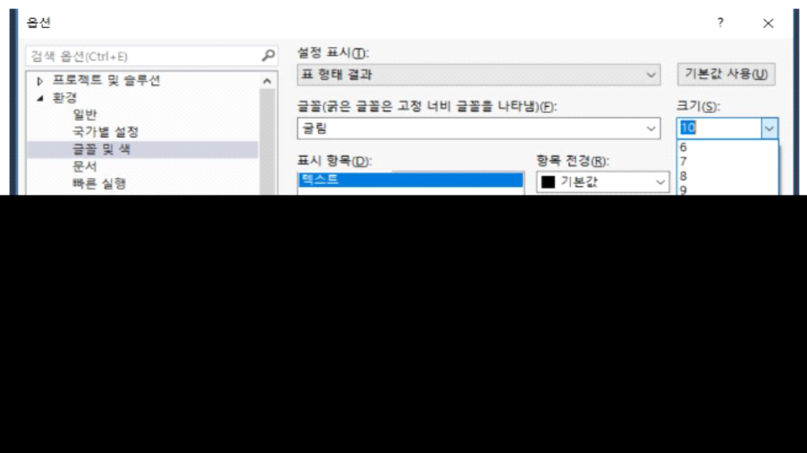

쿼리 결과 창 글씨 크기 변경
-
메뉴에서 "도구 (Tools)"를 선택하고 "옵션 (Options)"을 클릭합니다.
-
"환경 (Environment)" 카테고리에서 "글꼴 및 색 (Fonts and Colors)"를 선택합니다.
-
설정 표시 - 표 형태 결과
-
"글꼴 (Font)" 드롭다운 메뉴를 사용하여 원하는 글꼴을 선택하고, "크기 (Size)" 드롭다운 메뉴에서 원하는 크기를 선택합니다.
-
변경을 적용하려면 "확인 (OK)"을 클릭합니다.
